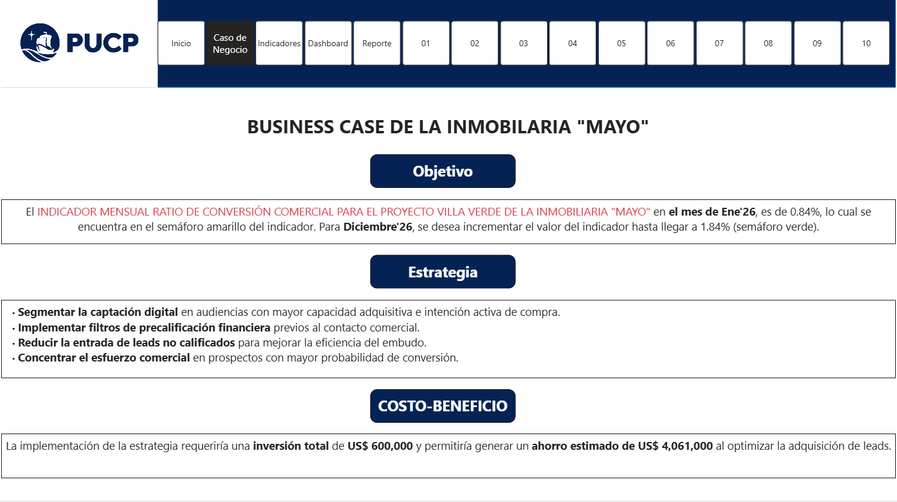

Caso de negocio
Inmobiliaria Mayo necesita mejorar la eficiencia del embudo comercial del proyecto Villa Verde. El reto no está solo en captar más leads, sino en convertir mejor los leads existentes en minutas firmadas vigentes.
Problema identificado
El ratio de conversión comercial se encuentra por debajo de la meta esperada. Esto evidencia una brecha entre el volumen de prospectos captados y las ventas efectivamente cerradas.
- Alta dependencia del volumen de leads.
- Posibles fricciones en segmentación y calificación.
- Mayor costo de adquisición cuando la conversión es baja.
- Necesidad de monitoreo mensual y accionable.

Vista del caso de negocio del dashboard original.
KPI principal
Indicador
Ratio de conversión comercial (%)
Porcentaje de leads brutos que se convierten en minutas firmadas vigentes.
Fórmula
(Minutas firmadas vigentes / Leads brutos) × 100
Medición mensual por proyecto, canal, vendedor, piso, torre y tipología.
Meta
Elevar de 0.84% a 1.84%
Objetivo planteado para diciembre de 2026.
Objetivos del proyecto
- Medir el desempeño mensual del ratio de conversión comercial del proyecto Villa Verde.
- Identificar brechas entre el nivel actual del indicador y la meta esperada.
- Cuantificar el beneficio económico de mejorar el indicador.
- Desarrollar un dashboard que apoye la toma de decisiones comerciales.
- Proponer acciones de mejora enfocadas en segmentación, precalificación y gestión comercial.
Mensaje ejecutivo: mejorar la conversión permite reducir leads no calificados, proteger el presupuesto comercial y orientar al equipo hacia oportunidades con mayor probabilidad de cierre.